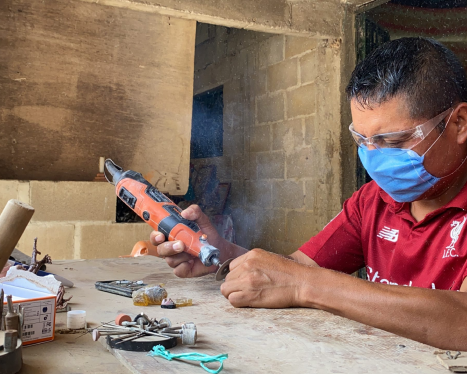
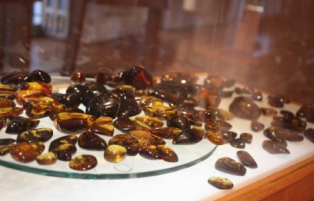
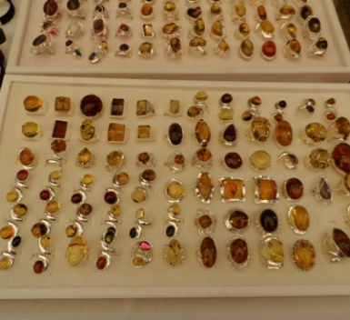

Chiapas, un estado ubicado en el sureste de México, es famoso por ser el hogar de uno de los depósitos
más significativos de ámbar en el mundo. El ámbar es una resina fósil que se formó hace millones de años
a partir de la savia de los
árboles. Lo que hace que el ámbar de Chiapas sea tan especial es su impresionante variedad de colores
que van desde el dorado hasta el rojo, pasando por tonalidades verdosas y azules. Además de su belleza
visual, el ámbar de Chiapas a menudo contiene inclusiones, como insectos o plantas, que capturan
momentos de la antigua historia natural.

Una Tradición Artesanal Centenaria
La historia de la artesanía del ámbar en Chiapas se remonta a siglos atrás, con raíces en las culturas
indígenas prehispánicas de la región. Estos pueblos ancestrales ya utilizaban el ámbar en sus joyas y en
rituales religiosos. Con el tiempo, esta tradición se ha mantenido viva y se ha transmitido de
generación en generación.
Los artesanos chiapanecos son maestros en el tallado y la creación de joyas a partir del ámbar. Cada
pieza es única, reflejando la destreza y la creatividad de quienes la elaboran. El proceso de
transformación del ámbar en hermosas joyas es un testimonio de la habilidad artesanal y el profundo
respeto por la naturaleza que caracteriza a los habitantes de Chiapas.

Apoyando a los Artesanos y su Herencia
En la actualidad, muchos artesanos chiapanecos dependen de la producción y venta de joyas de ámbar para
mantener a sus familias y preservar su legado cultural. Sin embargo, enfrentan desafíos económicos y la
presión de las tendencias comerciales modernas.
Tu apoyo a los artesanos de Chiapas a través de la adquisición de sus creaciones no solo te permite
disfrutar de auténticas obras de arte, sino que también contribuye a la conservación de una tradición
ancestral y al bienestar de estas comunidades. Cada pieza de ámbar que adquieres cuenta una historia,
llevando consigo la magia de Chiapas y la pasión de sus artesanos.

Nuestro Propósito: Apoyar a los Artesanos de Chiapas
En "Ámbar de Chiapas: Tesoros de la Naturaleza y Artesanía Mexicana", nuestro compromiso es claro:
respaldar y promover a los talentosos artesanos de Chiapas. A través de esta plataforma en línea, no
solo te invitamos a descubrir y adquirir estas maravillosas creaciones de ámbar, sino que también te
ofrecemos la oportunidad de contribuir directamente a la prosperidad de las comunidades chiapanecas.
Cada compra que realices en nuestro sitio web es una inversión en la preservación de una tradición
centenaria, en el sustento de familias y en la promoción de un valioso patrimonio cultural. Además, al
apoyar a los artesanos locales, estás ayudando a mantener viva la esencia misma de Chiapas y a asegurar
que estas habilidades y conocimientos se transmitan a las generaciones futuras.